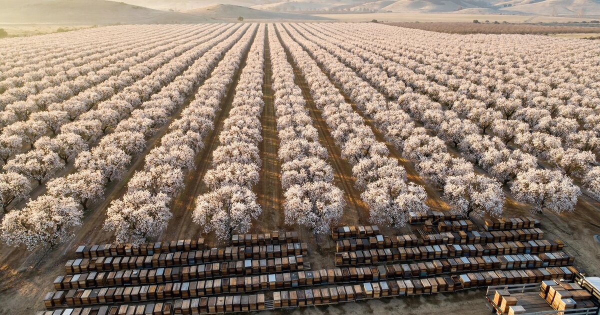

Pollination Contract Intelligence SaaS for Commercial Beekeepers and Specialty Crop Growers
The United States lost 39.9% of its managed honey bee colonies between April 2025 and April 2026. The year before that, it lost 55.6%. Beekeepers spend hundreds of millions of dollars annually rebuilding their livestock, growers pay full contract rates for hives they cannot independently verify, and the $700 million almond pollination market still runs on handshake deals struck over the phone in November for deliveries that must arrive by Valentine's Day.

The Problem
Every February, roughly two million beehives converge on California's Central Valley for the largest managed livestock migration on Earth. Commercial beekeepers truck colonies from as far as Florida, the Dakotas, and Maine to arrive before the three-week almond bloom window that pollinates a crop worth $11 billion in annual farm-gate revenue. The logistics are brutal: hives travel on flatbed semis overnight to avoid heat stress, colony losses during transit can run 5-10%, and the entire operation depends on a beekeeper's phone ringing in Q4 with a grower on the other end saying "I need 400 hives by February 10th." That phone call is, functionally, the contract.
According to a Choices Magazine analysis of the almond pollination market, repeated handshake agreements are the norm for direct beekeeper-grower relationships, and "the suggestion of a written agreement can actually be seen as offensive, especially in long-term relationships." Of almond growers surveyed, 56% sourced colonies from two or more beekeepers, and among those using brokers, 33% did not even know how many beekeepers their broker engaged. The market operates on trust, relationship tenure, and a frame-count inspection system where a broker physically opens a percentage of hives, counts the frames covered with bees, and assigns a quality grade that determines the fee.
This system worked tolerably when annual colony losses hovered around 15-20%, the level beekeepers consider sustainable. It is breaking under 40-55% mortality. The 2025-2026 U.S. Beekeeping Survey, led by Auburn University, recorded annual losses of 39.9% across 2.4 million managed colonies. The previous two years posted 55.1% and 55.6%, the highest since records began in 2010. Winter losses alone hit 30.3%, still ten percentage points above what beekeepers call acceptable. Steven Coy, President of the American Honey Producers Association, was blunt: "Losing nearly 40% of managed colonies in a single year is not a victory. It's a crisis in slow motion."
The consequences cascade through the supply chain. Beekeepers must rebuild nearly half their colonies every year, buying replacement queens at $18, packages at $89, and nucleus colonies at $109 each (USDA NASS, March 2025). These replacement colonies arrive weaker than established ones, meaning growers who contracted for eight-frame colonies may receive six-frame hives that deliver less pollination per acre. The grower has limited recourse because the inspection happened weeks earlier, the beekeeper's colonies deteriorated in transit or in the interim, and nobody has continuous, verifiable data on colony health at the time of orchard placement.
Market Size
Primary market: The global almond pollination service market alone was valued at $700 million in 2025, with North America accounting for $550.7 million (80%). Contract pollination represents 62.5% of that market at $437.5 million, while ad-hoc pollination captures the remaining 37.5% at a 40-60% premium above contract rates. Beyond almonds, the broader U.S. pollination services market encompasses blueberries ($120-160/colony), cherries, apples, cranberries, and a growing greenhouse segment for tomatoes and cucumbers. USDA reported total U.S. pollination income of $226 million in 2024, though industry participants widely regard this as an undercount because it captures only beekeeper-reported income and misses broker margins and informal payments.
Addressable market: The SaaS opportunity sits at the intersection of contract management, rate intelligence, and colony verification. The addressable customer base comprises approximately 1,600 commercial beekeeping operations (managing 500+ colonies, collectively controlling 92% of U.S. managed hives per the Auburn survey) and roughly 7,000 growers who contract for managed pollination. At $199/month for a Basic tier (contract management and rate benchmarking) and $599/month for a Premium tier (colony verification, logistics coordination, and predictive analytics), with an estimated 60/40 adoption split favoring Basic, the blended beekeeper ARPU is $359/month. At 1,600 commercial operations, the beekeeper-side TAM is $6.9 million ARR. The grower side, priced at $149/month per grower for contract tracking and colony verification data, adds $12.5 million ARR at 7,000 growers. Total platform TAM: $19.4 million.
The second-order revenue opportunity is a transactional marketplace fee on ad-hoc pollination placements. Ad-hoc pollination, the fast-growing 37.5% of the almond market, commands 40-60% premiums precisely because there is no efficient matching mechanism for last-minute colony needs. A 5% platform fee on $262.5 million in ad-hoc pollination transactions would yield $13.1 million, bringing the combined SAM to $32.5 million.
The Product
A two-sided contract intelligence platform connecting commercial beekeepers with specialty crop growers, built around three core modules:
- Contract management and rate benchmarking: The handshake problem is not that beekeepers and growers are unsophisticated. It is that the market has no centralized pricing data, so neither side can evaluate whether a given rate is fair. This module aggregates anonymized contract data (fee per colony, frame-count requirements, delivery windows, penalty clauses) across participating beekeepers and growers to produce regional rate benchmarks by crop type, season, and colony strength tier. The output: a beekeeper in the Dakotas knows whether $215/colony for February almond delivery is at the 40th or 75th percentile for the Central Valley market, and a grower in Fresno can verify whether the $235/colony quote from a new beekeeper reflects a premium for documented colony health or a speculative markup. Data governance is key: all contract data is anonymized before aggregation, individual operation pricing is never exposed, and participants control what they contribute through opt-in data sharing agreements.
- Colony health verification layer: The manual frame-count inspection that determines pollination fees is a snapshot from a single moment, often weeks before orchard placement. This module integrates with IoT hive monitoring sensors (temperature, humidity, acoustic signatures, weight changes) already being deployed by operations using BeeHero and similar platforms to create a continuous colony health record that both parties can reference. When a grower receives hives, the platform provides a verifiable health score based on sensor data from the preceding 30 days, not just the broker's one-time physical inspection. For beekeepers without sensors, the module supports a standardized photo-documentation protocol that timestamps and geotags frame-count inspections, ensuring smaller operations are not excluded from the verification system.
- Logistics coordination engine: Migratory beekeeping is a routing problem: colonies move from Florida to California in January, then to Washington for cherries in April, then to the Dakotas for summer honey production, then back south for overwintering. Each move involves coordinating truck capacity, timing bloom windows across multiple crops, and managing the biological constraint that bees cannot travel more than 48 hours without water and ventilation stops. This module optimizes multi-stop migration routes, matches available truck capacity with colony loads, and tracks transit conditions (temperature, duration) to identify in-transit colony stress before it becomes mortality.
Unit Economics
| Metric | Value |
|---|---|
| Monthly subscription (Basic: contract management + rate benchmarking) | $199/operation |
| Monthly subscription (Premium: full platform + colony verification) | $599/operation |
| Grower subscription (contract tracking + verification data) | $149/month |
| Blended beekeeper ARPU | $359/month |
| Ad-hoc marketplace transaction fee | 5% |
| Data infrastructure cost per subscriber/month | $22 |
| Sensor integration cost per subscriber/month | $15 |
| Customer acquisition cost (beekeeper) | $2,400 |
| Customer acquisition cost (grower) | $1,800 |
| Expected beekeeper LTV (28-month avg retention, 90% gross margin) | $9,050 |
| LTV:CAC ratio (beekeeper) | 3.8:1 |
| Payback period (beekeeper) | 6.7 months |
| Gross margin | 90% |
| Startup cost (18-month runway) | $3.2M |
| Break-even | 22 months |
Methodology note: The 28-month retention assumption is conservative relative to agricultural SaaS benchmarks. Farmers and beekeepers who integrate a tool into their annual contracting cycle (which happens once per year, during Q4 for the following almond season) face high switching costs because the platform becomes the system of record for multi-year relationships. CAC of $2,400 reflects the reality of selling to commercial beekeepers: the customer base is small (1,600 operations), geographically concentrated, and reachable through four primary channels (the American Beekeeping Federation conference, the American Honey Producers Association annual meeting, state apiarist networks, and the Almond Board of California). The LTV calculation: $359 × 28 months × 90% gross margin = $9,050. Payback period: 6.7 months.
Go-to-Market
Phase 1 (months 1-8): Recruit 80 commercial beekeeping operations and 200 almond growers in California's Central Valley to contribute anonymized contract data in exchange for free rate benchmarking reports. California is the only viable launch market because almond pollination accounts for roughly 80% of U.S. commercial pollination spend, concentrated in a 400-mile corridor from Bakersfield to Red Bluff. Target through the Almond Board of California, which maintains relationships with nearly all of the state's 7,600 almond growers, and through the California State Beekeepers Association, which represents the commercial operations that supply 60% of almond pollination colonies. Simultaneously, begin integrating with BeeHero's sensor API and the PollenOps acoustic monitoring platform to ingest colony health data from operations already using IoT hardware.
Phase 2 (months 9-16): Monetize with the $199/month Basic tier. Expand grower coverage to blueberry ($120-160/colony rental rates) and cherry markets in the Pacific Northwest and Michigan. Launch the ad-hoc pollination marketplace to capture the 37.5% of the market that currently operates through emergency phone calls and broker networks. The marketplace model is particularly valuable during climate disruption events: when an unexpected frost delays bloom timing by two weeks, growers need to extend or renegotiate beekeeper placements on days of notice, and the current system has no mechanism for this beyond a frantic call to a broker.
Phase 3 (months 17-24): Launch Premium tier at $599/month with full colony verification, logistics optimization, and predictive analytics. Introduce the grower-side subscription at $149/month. Begin serving the emerging greenhouse pollination segment, where bumblebee hive rentals ($80-140/colony per cycle) for tomato and pepper production are growing at 8.1% annually and are even more reliant on verifiable colony health because greenhouse conditions amplify the consequences of weak colonies. Target enterprise accounts: Blue Diamond Growers (the largest almond cooperative, handling 80% of global production) and Wonderful Orchards as anchor grower clients.
Competitive Landscape
| Company | What It Does | Contract Intelligence? | Funding / Revenue |
|---|---|---|---|
| BeeHero | IoT hive sensors, precision pollination monitoring, full-service pollination provider | No: monitors colony health but does not benchmark rates or manage contracts | $64M raised, ~$70M revenue |
| BeeFlow | Bee performance enhancement (cold-weather pollination, crop-specific training) | No: optimizes bee behavior, not the commercial relationship | $3M seed |
| HiveTracks | Beekeeping management app, biodiversity monitoring for solar sites | No: tracks individual hive records, no market-level rate data | Wefunder crowdfunding |
| PollenOps | Acoustic colony monitoring, grower marketplace, honey yield forecasting | Partial: has a grower marketplace but no rate benchmarking or contract management | Pre-revenue |
| Traditional brokers | Match beekeepers with growers, negotiate fees, arrange logistics | Implicit: brokers hold rate information but do not share it | 18.4% of almond market ($127M) |
| This startup | Rate benchmarking, contract management, colony verification, logistics coordination | Core product: the data layer that connects colony health to contract terms | $199-599/mo |
The structural gap is between monitoring and transacting. BeeHero, the dominant player, has built the world's largest bee dataset and generates $70 million in revenue, but it operates as a pollination service provider, not a contract intelligence platform. It does not benchmark rates, manage multi-party contracts, or provide growers with independent colony verification. The broker segment, which intermediates $127 million in almond pollination annually, holds the most valuable rate data in the industry but has zero incentive to make it transparent, because information asymmetry is the broker's core value proposition. This startup occupies the layer between the sensor companies and the brokers: it aggregates the health data that sensors produce, combines it with the pricing data that brokers hoard, and delivers both to the parties who actually bear the risk.
Why Now
Four forces create the opening. First, colony mortality has reached a threshold that makes the old system untenable. Losing 15% of your colonies annually is a cost of doing business. Losing 40-55% for three consecutive years is an existential threat. The 2025-2026 Auburn University survey found that the U.S. colony count dropped from 2.6 million to 2.4 million in just two years, a loss of 200,000 colonies despite aggressive rebuilding. At 40% annual losses, a 1,000-colony operation must replace 400 colonies per year at a minimum cost of $43,600 in nucleus colonies alone, not counting the labor, feeding, queen failures, and six to eight weeks of reduced productivity while replacement colonies build strength. That cost makes every contracting decision higher-stakes and every rate negotiation more consequential.
Second, IoT hive monitoring hardware has reached cost and scale thresholds that make continuous colony verification feasible. BeeHero has deployed sensors across what it claims are 100 million acres of crop coverage. PollenOps is bringing acoustic monitoring to the same market at even lower hardware cost. The data layer exists. What is missing is the commercial intelligence layer that connects sensor data to contract terms, so that a colony health score translates into a defensible rate adjustment rather than a subjective broker judgment.
Third, climate variability is compressing and shifting bloom windows in ways that make static annual contracts increasingly inadequate. When a warm January accelerates almond bloom by ten days, growers need hives earlier than contracted. When a late frost delays bloom, beekeepers have colonies sitting idle in orchards burning through feed reserves. The ad-hoc pollination segment is growing at 6.8% annually precisely because climate-driven unpredictability is making fixed-date contracts riskier for both sides. A platform that can dynamically match available colonies to shifting bloom windows captures the premium that currently accrues to brokers who happen to know which beekeeper has spare capacity this week.
Fourth, generational transition in the beekeeping industry is creating technology adoption openings. The median commercial beekeeper is aging, and the operations replacing them tend to be better capitalized, more data-literate, and more willing to adopt software tools. The same generational pattern drove precision agriculture adoption in row crops a decade ago, and the pollination industry is following the identical trajectory with a lag.
Original Contribution: The Colony Replacement Tax
The hidden cost of colony mortality is not the dead colonies themselves. It is the systematic quality degradation of the replacement colonies that enter the pollination supply chain. Nobody has published this full accounting, so here is a rough estimate using USDA figures.
USDA reports 2.4 million managed colonies in 2025 and a 39.9% annual loss rate. That means approximately 958,000 colonies were lost and had to be replaced during the survey year. A nucleus colony takes 6-8 weeks to build to pollination strength (8+ frames of bees). During that ramp-up period, the colony produces zero pollination value and requires feeding. More importantly, replacement colonies that are built in fall and trucked to California for February almond bloom frequently arrive below the 8-frame threshold that commands the full $215/colony fee. A 6-frame colony might earn $170-180, a $35-45 discount per hive.
| Replacement Cost Component | High Estimate | Adjusted Estimate |
|---|---|---|
| Direct colony replacement (958K colonies × $109/nuc vs. blended method) | $104.4M | $64.2M |
| Feeding during build-up (~$7/colony × 958K) | $6.7M | $6.7M |
| Labor for splits and queen introduction ($15/colony × 958K) | $14.4M | $14.4M |
| Quality discount on sub-8-frame almond hives (~300K colonies × $35-45) | $10.5-13.5M | $10.5-13.5M |
| Total annual colony replacement tax | $136-139M | $96-99M |
| As % of USDA-reported pollination income ($226M) | ~60% | ~43% |
| As % of estimated true market ($450M) | ~31% | ~22% |
Methodology note: The high estimate assumes all replacements are purchased nucleus colonies at $109 each (USDA NASS 2024). The adjusted estimate uses a more realistic blend: 50% colony splits at $30 effective cost, 30% purchased nucs at $109, and 20% packages at $89. The $226 million USDA pollination income base is widely regarded as an undercount; BeeHero's CEO has publicly stated the company alone expects to exceed $70 million in revenue, suggesting the true U.S. market may be $400-500 million. Sugar syrup cost of $0.40/lb and labor of $15/colony at commercial scale are industry rule-of-thumb figures, not audited data.
Even the conservative estimate is striking. American beekeepers are spending somewhere between twenty-two and sixty cents of every pollination dollar rebuilding the livestock that died since last season. For context, the cattle industry's annual mortality rate runs 1-2%. Poultry operations lose 3-5%. No other managed livestock sector operates anywhere near a 40% annual replacement rate.
Limitations
This analysis rests on several assumptions that weaken under scrutiny. First, the USDA's $226 million pollination income figure is almost certainly an undercount, which means the colony replacement tax as a percentage of revenue may be overstated. Industry participants, including BeeHero's CEO, have cited revenue figures that imply the true market is substantially larger, perhaps $400-500 million when broker margins, unreported cash payments, and non-almond pollination are fully captured. If the real market is $450 million, the replacement tax drops from 60% to 31% of revenue, which is still strikingly high but less apocalyptic.
Second, the 39.9% colony loss rate from the Auburn survey is a mortality rate, not a net population decline. Beekeepers can and do replace colonies through splits, nuc purchases, and package installations, which is why the total colony count declined by only 200,000 (from 2.6M to 2.4M) despite nearly a million colonies dying. Some replacement methods (splitting strong colonies) cost far less than purchasing nucleus colonies at $109 each. The $104.4 million direct replacement cost assumes all replacements are purchased nucs, which overstates the expense. A more realistic blend (50% splits at $30 effective cost, 30% nucs at $109, 20% packages at $89) yields $64.2 million in direct replacement costs, reducing the total tax to $96-99 million.
Third, the TAM calculation of $19.4 million in SaaS revenue for a market with 1,600 commercial beekeeping operations assumes adoption rates that are optimistic for an industry where handshake deals are culturally preferred and technology adoption has historically lagged. Even at 100% penetration of commercial operations, 1,600 customers at $359/month is only $6.9 million ARR before grower-side revenue. This is a small market by venture standards, which constrains the capital structure and growth expectations of any startup pursuing it.
Fourth, platform concentration risk is real. A single system of record for contract data, rate benchmarks, and colony health scores across a market with only 1,600 commercial beekeepers creates dependency. If the platform raises prices, changes data-sharing terms, or gets acquired by a larger agricultural data company (Farmers Business Network, Bayer/Climate Corp, John Deere), participants could find their own competitive data weaponized against them. The article's own "What You Can Do" section suggests selling aggregated data to crop insurers and commodity traders, entities with significant informational and bargaining power advantages over individual beekeepers.
Strongest Counterargument
The deepest challenge is not market size but the possibility that the handshake system is not broken. It may be optimal.
Consider why oral contracts persist despite decades of agricultural extension advice recommending written agreements. The Choices Magazine study found that growers using oral agreements had smaller operations (346 acres vs. 716 acres for written contracts) and fewer years of experience (15 vs. 24 years). But they also reported yields of 1,927 lbs/acre, only 10% below the 2,151 lbs/acre achieved by growers with written contracts, and those who used both oral and written agreements operated the largest farms (1,694 acres) and achieved the highest yields (2,282 lbs/acre). The data does not show that handshake deals produce systematically worse outcomes. They produce comparable outcomes with lower transaction costs.
Relational contracts work in the pollination market because the same beekeepers and growers transact repeatedly over years or decades, creating enforcement through reputation rather than litigation. A beekeeper who delivers weak colonies once will not get a call next November. A grower who delays payment will find fewer beekeepers willing to truck hives to their orchard. These reputational mechanisms are extremely effective in small, concentrated markets where everyone knows everyone. A digital platform that replaces relational trust with data-verified trust may actually increase transaction costs (subscription fees, data entry, sensor integration) without materially improving outcomes, because the current system's "inefficiency" is not really inefficiency. It is a low-cost enforcement mechanism that works.
The strongest version of this argument: the only people who consistently need better price discovery and contract management in this market are new entrants, small operations, and growers expanding into new regions where they lack established beekeeper relationships. That segment exists, but it may be too small and too price-sensitive to support a venture-scale SaaS business. The large commercial operators who represent 92% of colonies already have the relationships, the rate knowledge, and the bargaining power to negotiate effectively without a platform.
The Bottom Line
The U.S. pollination industry is spending 31-60% of its gross revenue replacing colonies that die every year, negotiating rates through phone calls, and verifying colony quality through a manual inspection system designed for an era when 15% annual losses were the norm. Forty-percent mortality has turned every contracting cycle into a high-stakes bet on colony survival, and neither beekeepers nor growers have the continuous, verifiable data they need to price that risk fairly. The IoT sensor infrastructure is being built by BeeHero and PollenOps. The commercial intelligence layer that translates sensor data into pricing signals, contract terms, and logistics coordination does not exist. Whether the market is large enough to support a venture-scale company is genuinely uncertain, but the operational pain is concrete, the timing forces are aligned, and the product gap is unambiguous.
What You Can Do
If you are a commercial beekeeper managing 500+ colonies: calculate your colony replacement cost as a percentage of your total pollination revenue for the last three seasons. Include nucleus purchases, queen costs, feeding during build-up, and labor for splits and queen introduction. If that number exceeds 25%, you are operating at a replacement burden that makes every contract negotiation a survival calculation, and you need data on what your colonies are worth relative to the market to avoid underpricing the ones that survived. Start by documenting your frame counts at delivery with timestamped photos. It costs nothing, and it creates the verification record that will eventually be worth money.
If you are an almond grower contracting for 200+ hives: ask your beekeeper or broker for continuous colony health data from IoT sensors. If they use BeeHero or similar platforms, request access to the dashboard for your contracted hives during the two weeks before delivery and through the bloom period. If they do not use sensors, negotiate a contract clause that ties 10% of the fee to a documented frame count at orchard placement, not at the broker's inspection weeks earlier. The beekeepers with strong colonies will accept this gladly, because it lets them differentiate on quality. The ones who resist may be delivering weaker hives than you are paying for.
If you are a software founder considering agricultural SaaS: the pollination market is small enough that it probably cannot support a pure-play SaaS company at venture scale. The more interesting play may be the data layer: aggregate anonymized rate and colony health data across the platform, and sell it as an index to crop insurers, commodity traders, and agricultural lenders who need pollination risk signals to price their own products. The commodity market for almonds trades on projected yield, and pollination quality is the single largest variable in that projection. A verifiable pollination quality index would have buyers far beyond the beekeepers and growers who generate the data.
Related
📰 Grain Bin Monitoring SaaS — IoT-driven agricultural asset monitoring in another fragmented, high-mortality market where the cost of lost inventory dwarfs the cost of sensors
📰 Farmland Lease Rate Intelligence — rate benchmarking for another agricultural market where pricing is opaque and information asymmetry favors intermediaries
📰 Equipment Rental Rate Intelligence SaaS — the STR benchmarking model applied to a parallel fragmented-asset industry with no centralized pricing data